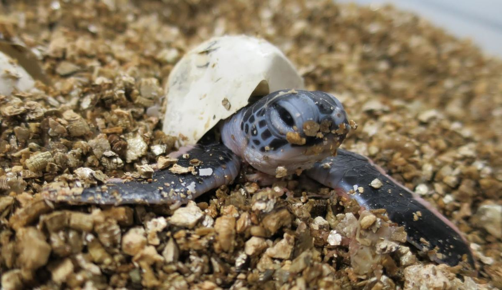
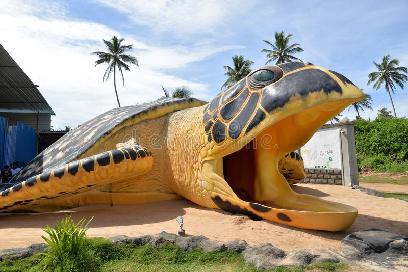

The Hikkaduwa Turtle Hatchery is a popular conservation project and tourist attraction located in the town of Hikkaduwa on the southwestern coast of Sri Lanka. It is dedicated to the protection and conservation of sea turtles, particularly the endangered Olive Ridley, Green, Hawksbill, and Loggerhead turtle species.

The hatchery plays a crucial role in safeguarding turtle eggs, caring for hatchlings, and releasing them back into the ocean. Here are some brief details about the Hikkaduwa Turtle Hatchery:.
Objectives: The main objective of the hatchery is to protect sea turtles and their nesting sites, increase their hatching success rates, and raise awareness about turtle conservation among tourists and local communities.

Conservation Practices: The hatchery collects turtle eggs that are vulnerable to predation or disturbance from nesting beaches. These eggs are brought to the hatchery, where they are carefully incubated in a controlled environment to enhance their chances of survival. Once the hatchlings emerge, they are nurtured until they are strong enough to be released into the sea.
Activities: The hatchery also serves as an educational center, providing visitors with information about sea turtles, their life cycles, threats they face, and the importance of conservation efforts. Visitors can learn about the different turtle species and witness the hatching and release processes.
Rehabilitation of Injured Turtles: The Hikkaduwa Turtle Hatchery provides medical care and rehabilitation for injured and sick turtles. If turtles are found entangled in fishing nets or injured due to human activities, the hatchery team works to treat and heal them before releasing them back into the ocean.

Community Engagement: The hatchery actively involves local communities in its conservation efforts. They collaborate with fishermen and raise awareness about sustainable fishing practices that reduce accidental turtle bycatch. The hatchery also conducts workshops and educational programs in nearby schools and villages to promote turtle conservation.
The Hikkaduwa Turtle Hatchery serves as an essential conservation initiative, contributing to the protection and preservation of sea turtles in Sri Lanka. It offers visitors an opportunity to learn about these magnificent creatures, witness the hatching process, and support conservation efforts through donations and sponsorships.